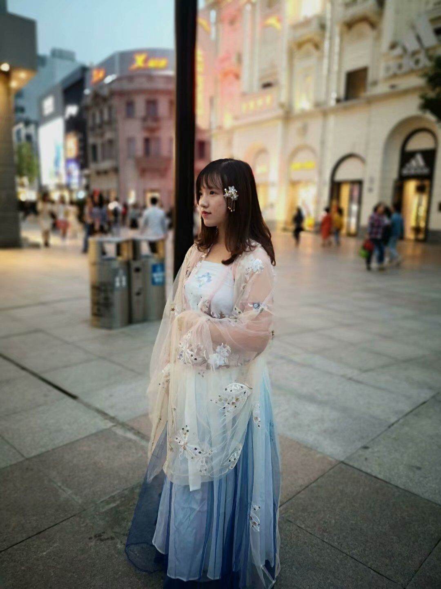
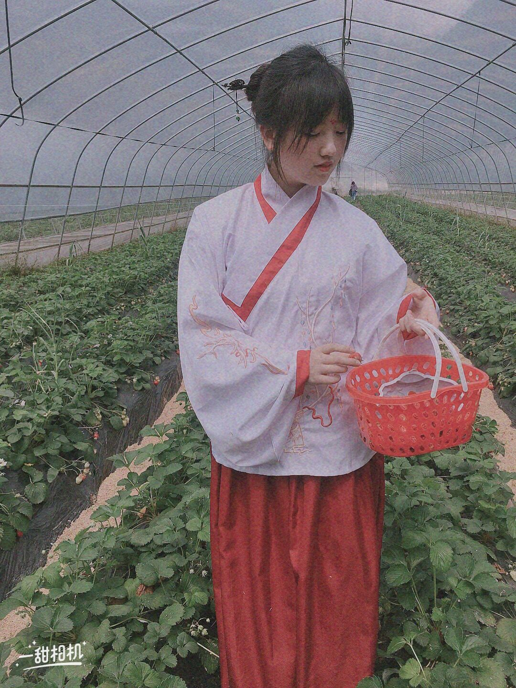

哈哈哈，没想到吧！小桃子还是一只汉服娘！ （虽然其实我很穷）但是不妨碍我对汉服的喜欢！！ 其实不仅是汉服，对中国的传统文化都很喜欢的！ 现在给大家看看汉服的照片吧~

这是我人生中的第一套汉服，也是因为它入的坑。是部门可爱的女孩子们 送我的生日礼物，所以特别有纪念意义！我很喜欢这张照片，在武大绿道拍的， 水天一色。
这这这，这是我最贵的一套汉服了，但是我愿意为它吃土！！因为它真的太美了！ 差点以为自己真的是仙女下凡了！哈哈哈哈 开玩笑的。这是跟高中同学在汉口玩拍的！
这是不久前买的一套晋制汉服，挺朴素的一套，但是红白的配色我很喜欢！这是跟家里人一起在草莓园 摘草莓拍的，很开心！
